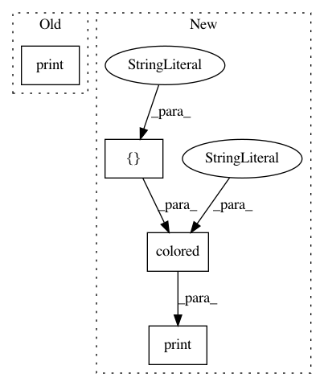

74c7682f94cef60560f16bba95a85d36bce68993,pyprob/nn.py,InferenceNetworkLSTM,loss,#InferenceNetworkLSTM#Any#Any#Any#,1014
Before Change
proposal_distribution = self._proposal_layers[current_address](proposal_input, current_samples)
l = proposal_distribution.log_prob(current_samples_values)
if util.has_nan_or_inf(l):
print("Warning: NaN, -Inf, or Inf encountered in proposal log_prob.")
print("proposal_distribution", proposal_distribution)
print("current_samples_values", current_samples_values)
print("log_prob", l)
print("Fixing -Inf")
After Change
proposal_distribution = self._proposal_layers[current_address](proposal_input, current_samples)
l = proposal_distribution.log_prob(current_samples_values)
if util.has_nan_or_inf(l):
print(colored("Warning: NaN, -Inf, or Inf encountered in proposal log_prob.", "red", attrs=["bold"]))
print("proposal_distribution", proposal_distribution)
print("current_samples_values", current_samples_values)
print("log_prob", l)
print("Fixing -Inf")
In pattern: SUPERPATTERN
Frequency: 3
Non-data size: 4
Instances
Project Name: pyprob/pyprob
Commit Name: 74c7682f94cef60560f16bba95a85d36bce68993
Time: 2018-05-04
Author: atilimgunes.baydin@gmail.com
File Name: pyprob/nn.py
Class Name: InferenceNetworkLSTM
Method Name: loss
Project Name: pyprob/pyprob
Commit Name: 19d1bf9ad5782d5ffbc069d95289449dd5a1467e
Time: 2018-02-15
Author: atilimgunes.baydin@gmail.com
File Name: pyprob/util.py
Class Name:
Method Name: debug
Project Name: pyprob/pyprob
Commit Name: 74c7682f94cef60560f16bba95a85d36bce68993
Time: 2018-05-04
Author: atilimgunes.baydin@gmail.com
File Name: pyprob/nn.py
Class Name: InferenceNetworkLSTM
Method Name: optimize